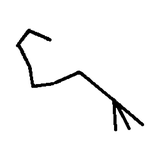
ScorpiusThe starting point, set aside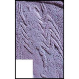
Scorpionmean rank 8.3 of 12; 9th of 12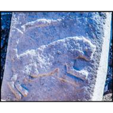
Lion or leopardDifferent
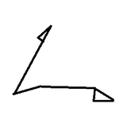
Pisces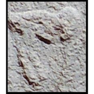
Bending birdmean rank 7.7 of 11; 9th of 11Different
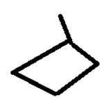
Libra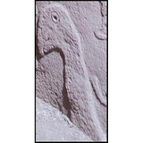
Duck or goosemean rank 8.9 of 11; 11th of 11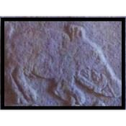
BoarDifferent
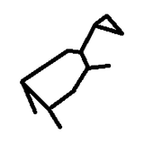
Lupus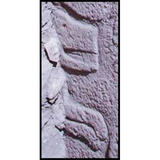
Dog or wolfmean rank 8.0 of 11; 11th of 11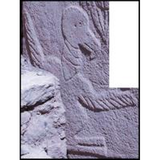
Eagle or vulture and lion or leopardtied bestDifferent
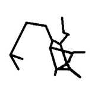
SagittariusDifferent
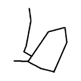
Ophiuchus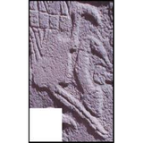
Bending bird with fishmean rank 6.7 of 11; 6th of 11Different
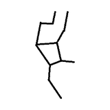
Virgo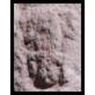
Frogmean rank 4.7 of 11; 5th of 11Different
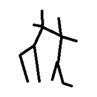
Gemini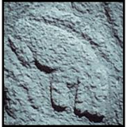
Ibex or ratmean rank 5.5 of 11; 4th of 11Different